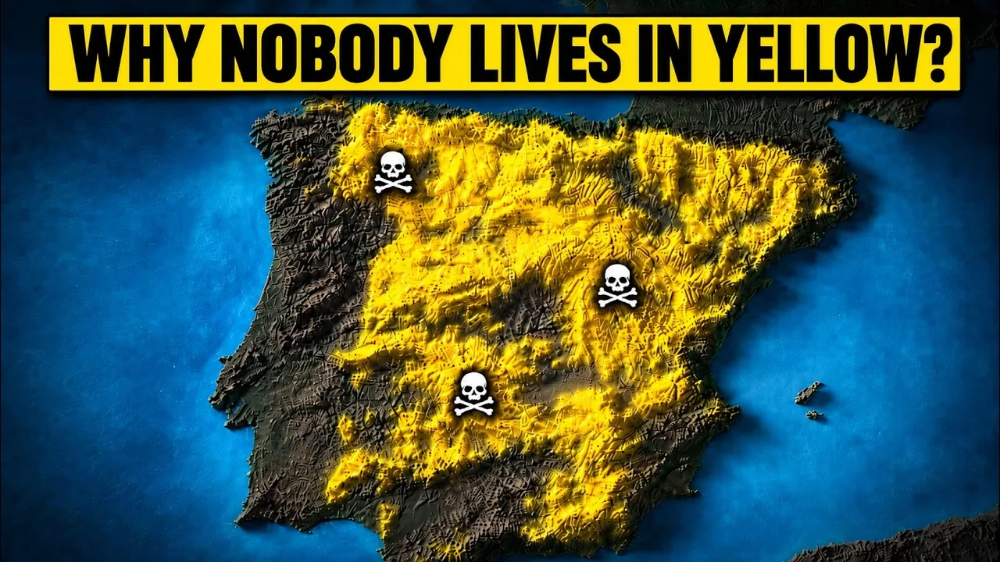
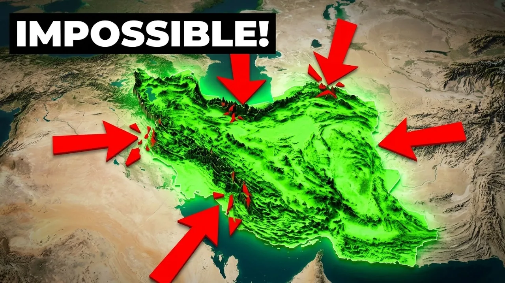
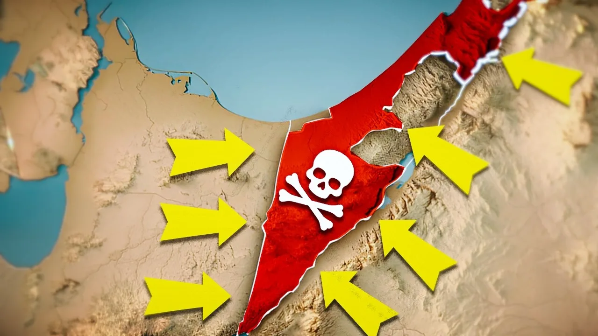
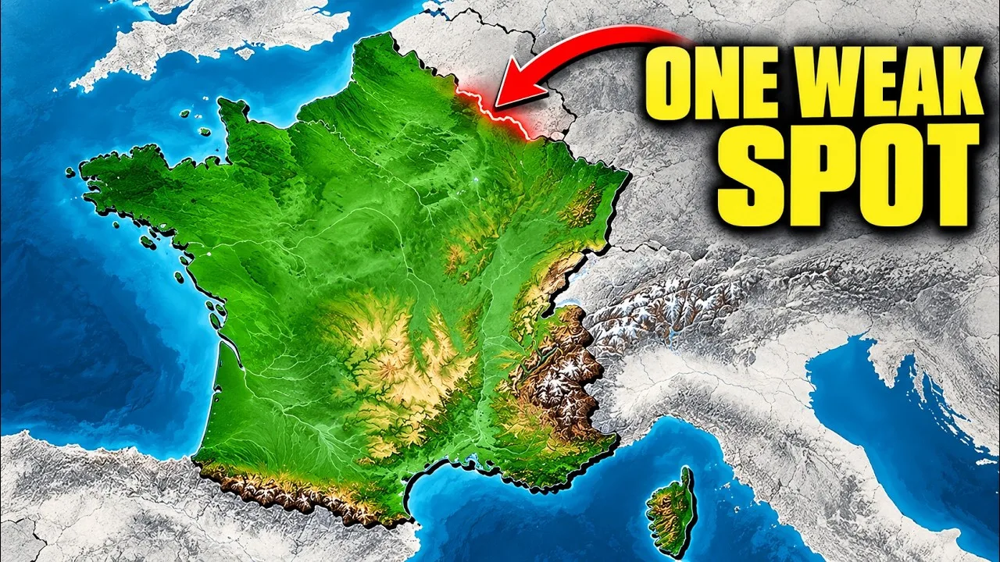
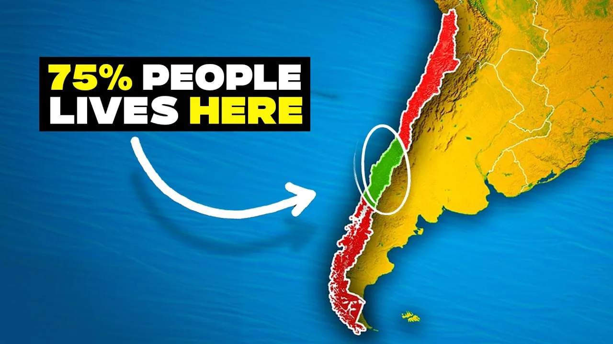
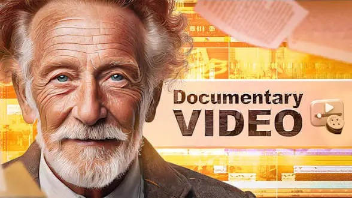

Why Eastern Europe Still Lags Behind, and How Fast It Is Catching Up
Serfdom, two world wars, forty years of central planning and a painful 1990s left Eastern Europe behind. Why the gap persists, and how fast it is closing.
Read articlePractical ideas from my work in documentary editing, visual storytelling, map animation, and long-form YouTube videos, and the stories behind my own documentaries on geography, history and the economy.
Serfdom, two world wars, forty years of central planning and a painful 1990s left Eastern Europe behind. Why the gap persists, and how fast it is closing.
Read article
Around 90% of Spaniards live on about 30% of the land. How a high plateau, medieval resettlement and the rural exodus of the 1950s–70s emptied inland Spain.
Read article
Mountains, deserts and the Strait of Hormuz make Iran a natural fortress. How its geography shaped the Iran–Iraq War and the strategy it has followed since 1979.
Read article
How Israel’s location, size and holy sites shaped its wars, its security strategy and its conflict with the Palestinians, from ancient Judah to the Oslo map.
Read articleNew Zealand is beautiful, safe and temperate, yet most of its land has few people. How remoteness, Māori history, colonisation and the Southern Alps shaped it.
Read article
Mountains, rivers and three seas made France a great power. A flat northern plain let Germany invade three times, until France closed the gap with diplomacy.
Read article
Chile is 4,270 km long, yet about three-quarters of its people live in a small central slice. How conquest, war and extreme geography made it that way.
Read articleRandom cutaways can weaken a strong video. Here's the four-label framework I use to decide when B-roll actually earns its place.
Read article
I use AI tools most weeks. Here's what they've actually taken over — and the part of the job they still can't touch.
Read article
A still map asks viewers to imagine movement. An animated one just shows it to them.
Read article
It's not the case that keeps people watching — it's when the edit decides to tell you about it.
Read article
No presenter, no free attention. Here's what actually keeps people watching when there's no face on screen.
Read articleWrong question. Here's the one that actually decides whether an edit is any good.
Read articleThere's no subscriber count that automatically means it's time. Here are the clearest signs editing has become the bottleneck.
Read articleMarketplaces make hiring convenient. Direct hiring can build something more valuable — a long-term creative partnership.
Read articleBoth can produce excellent work. Here's how they compare on cost, communication, speed, flexibility, and scalability.
Read articleNot a vague promise of "better videos" — the actual, concrete list of what changes in your footage.
Read article"It depends" is the honest answer. Here's everything it actually depends on, so you can figure out what you should be paying.
Read articleGood footage gets you halfway. What happens in the timeline decides whether anyone stays to watch it.
Read article
A software list on a resume tells you nothing about whether someone can find the story buried in your footage.
Read articleI write about the decisions behind the edit: how stories are structured, how visuals are chosen, when maps help, and why restraint often makes a video stronger.
About AriyanI work with creators, brands, and businesses on documentary-style YouTube videos, talking-head content, map animation, and visual storytelling.